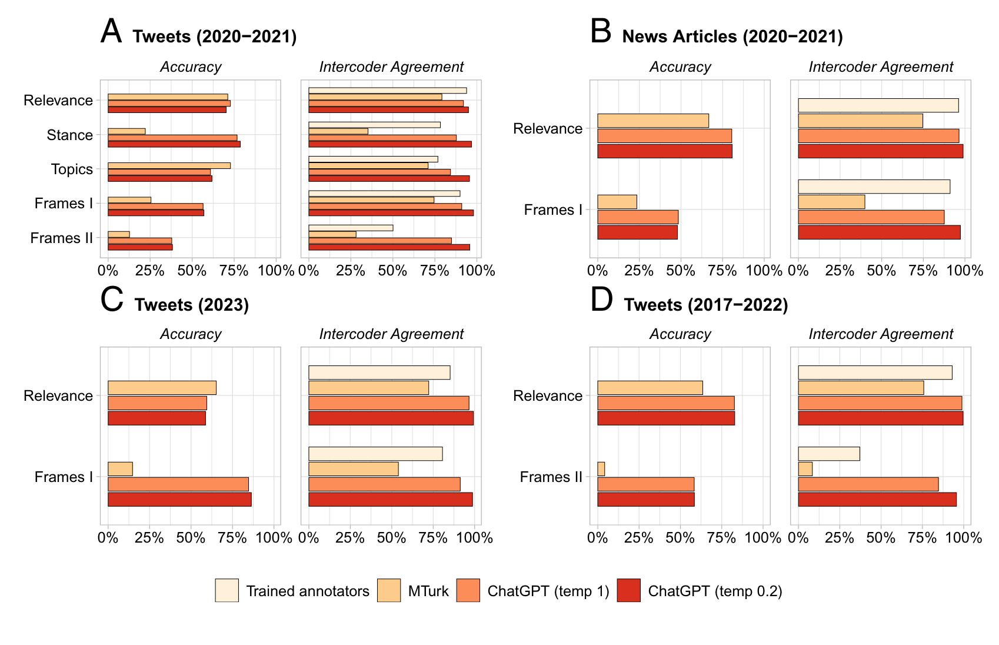

| Seminar dates and topics | ||
| Date | Topics | Required reading |
|---|---|---|
| 15 April 2026 |
|
Schwemmer, C., & Wieczorek, O. (2020). The Methodological Divide of Sociology: Evidence from Two Decades of Journal Publications. Sociology, 54(1), 3–21. Stuhler, O., Ton, C. D., & Ollion, E. (2025). From Codebooks to Promptbooks: Extracting Information from Text with Generative Large Language Models. Sociological Methods & Research, 54(3), 794–848. |
| 22 April 2026 |
|
Gilardi, F., Alizadeh, M., & Kubli, M. (2023). ChatGPT outperforms crowd workers for text-annotation tasks. PNAS, 120(30). Reiss, M. V. (2023). Testing the Reliability of ChatGPT for Text Annotation and Classification: A Cautionary Remark. arXiv Preprint. |
| 29 April 2026 |
|
Jungherr, A. (2018). Normalizing digital trace data. In N. J. Stroud & S. C. McGregor (Eds.), Digital Discussions: How Big Data Informs Political Communication (pp. 9–35). New York: Routledge. Sen, I., Flöck, F., Weller, K., Weiß, B., & Wagner, C. (2021). A Total Error Framework for Digital Traces of Human Behavior on Online Platforms. Public Opinion Quarterly, 85(S1), 399–422. |
| 6 May 2026 |
|
Chan, C.- Hong, Schatto-Eckrodt, T., & Gruber, J. (2024). What makes computational communication science (ir)reproducible? Computational Communication Research, 6(1). Nyhan, B., Settle, J., Thorson, E., Wojcieszak, M., Barberá, P., et al. (2023). Like-minded sources on Facebook are prevalent but not polarizing. Nature, 620(7972), 137–144. |
| 13 May 2026 |
|
Bauer, P. C., & Landesvatter, C. (2023). Writing a reproducible paper with RStudio and Quarto. OSF Preprint. |
| 20 May 2026 |
|
|
| 27 May 2026 |
|
|
Main results from Gilardi. et al.

Gilardi, F., Alizadeh, M., & Kubli, M. (2023). ChatGPT outperforms crowd workers for text-annotation tasks. Proceedings of the National Academy of Sciences, 120(30)